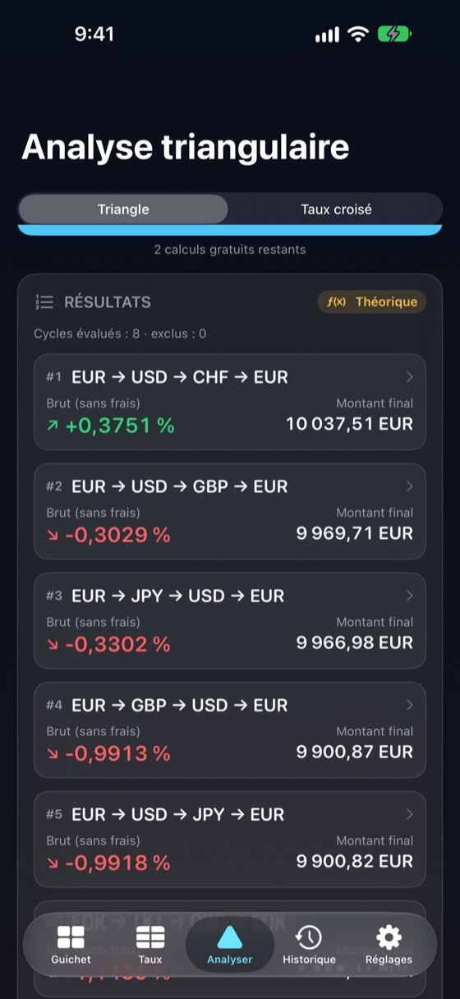
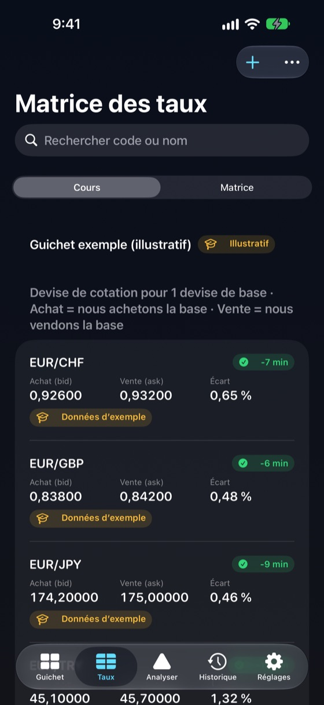
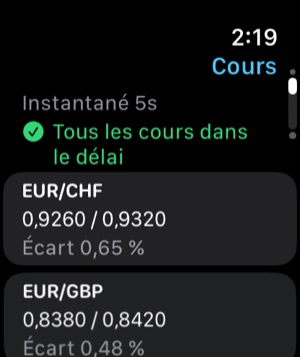

Résilience hors ligne
Tableaux de cours, historique et calculs restent sur l’appareil. FXDesk s’ouvre et calcule en mode avion.
Pour bureaux de change, caissiers et cambistes
FXDesk transforme les prix de votre tableau en matrice de taux, taux croisés et chemins A → B → C → A classés — avec chaque écart, frais et horodatage visibles.
Tout fonctionne sur votre iPhone, sans Internet, et un résultat théorique n’est jamais présenté comme un gain garanti.

Chaque chiffre indique son origine, son ancienneté et le côté du cours utilisé.
Tableaux de cours, historique et calculs restent sur l’appareil. FXDesk s’ouvre et calcule en mode avion.
Évalue chaque cycle A → B → C → A de votre tableau, dans les deux sens, et les classe par résultat net estimé.
Un instantané en lecture seule de votre guichet, l’âge des cours et votre dernier résultat sur Apple Watch.
Mode grands chiffres, chiffres à chasse fixe et recherche de devises.
Saisissez achat et vente par paire. La matrice montre chaque sens — et « — » là où aucun cours n’existe.
Vendre la devise de base utilise l’achat, l’acheter utilise 1 ÷ vente. Les cours inverses échangent correctement les côtés. Jamais de faux gain par produit de cours moyens.
Comparez un cours direct au taux croisé synthétique via une troisième devise, écarts compris, avec détection de marché croisé.
Ajoutez une commission par étape et des frais fixes. Brut et net estimé côte à côte, étape par étape.
Un tableau de cours par guichet ou agence. Dupliquer, renommer, exporter, importer — jamais de mélange de cours.
Chaque calcul est conservé avec les cours exacts, horodatages, arrondis et frais utilisés.
Pas de compte, pas d’analyse, pas de pistage. Vos cours restent sur l’appareil sauf export.
Trois calculs gratuits, puis un seul achat intégré. Sans abonnement.
Entrez les prix d’achat et de vente de votre tableau, ou partez du guichet d’exemple.
Choisissez une devise de départ et un montant, ou un cycle précis à trois devises.
FXDesk applique le bon côté du cours à chaque étape et classe les cycles possibles.
Contrôlez écarts, frais, arrondi espèces, fraîcheur des cours et hypothèses de chaque résultat.
Un cours indicatif ou de référence n’est pas un prix exécutable. FXDesk calcule avec les cours que vous saisissez ; il ne peut pas savoir si un guichet les honorera, dispose des billets ou applique des limites.
Écarts, commissions, arrondis aux billets et délai entre étapes effacent souvent les petites différences théoriques. C’est pourquoi FXDesk sépare brut et net estimé et marque comme théoriques les cours périmés, moyens seuls ou d’exemple.
FXDesk est une calculatrice. Il n’exécute ni transaction ni change, ne fournit pas de conseil financier et ne garantit aucun gain.
Cours, profils, historique et calculs sont stockés sur l’iPhone et fonctionnent sans connexion. Chaque cours garde son heure de relevé et sa source ; ceux qui dépassent votre seuil sont signalés, jamais traités en silence comme actuels.


L’app Watch affiche un instantané en lecture seule du guichet actif : cours et écarts, âge de l’instantané, nombre de cours périmés et dernier calcul. Elle conserve le dernier instantané hors de portée de l’iPhone.
Gratuit
$29.99
Achat intégré unique (prix US ; les prix locaux sont fixés par l’App Store).
Un résultat triangulaire ou croisé obtenu avec succès. Saisies invalides, erreurs, consultation ou modification des cours et réouverture de l’historique ne comptent jamais ; un calcul identique n’est pas compté deux fois.
Oui. Cours, profils, historique et calculs sont sur votre iPhone. Seuls les taux de référence BCE facultatifs et l’achat App Store nécessitent une connexion.
Non. FXDesk calcule avec vos cours. Les taux de référence BCE facultatifs sont publiés une fois par jour ouvré, à titre informatif, et jamais utilisés dans les calculs.
Convertir A → B → C → A via trois cours. Si le montant final dépasse le montant de départ après écarts, le cycle affiche une différence théorique.
Non. Le résultat dépend des cours. Disponibilité, stock de billets, limites, frais et délais peuvent l’annuler. FXDesk marque les résultats indicatifs ou théoriques, jamais exécutables.
Vendre donne le cours d’achat, plus bas ; acheter coûte le cours de vente, plus haut. Chaque étape paie l’écart, donc la plupart des cycles finissent un peu sous le montant de départ.
Trois calculs aboutis. Erreurs et saisies invalides ne comptent pas.
Non. C’est un achat intégré unique et non consommable, restaurable.
Un instantané en lecture seule : cours et écarts, ancienneté, cours périmés et dernier calcul.
Non. Il ne passe aucun ordre, n’échange pas d’argent et ne se connecte à aucune banque ni courtier.
Vos profils et cours, l’historique, les réglages et le compteur de calculs gratuits. Rien n’est envoyé ; il n’y a pas de compte.